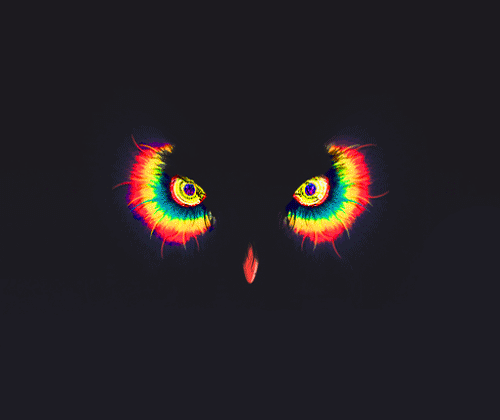
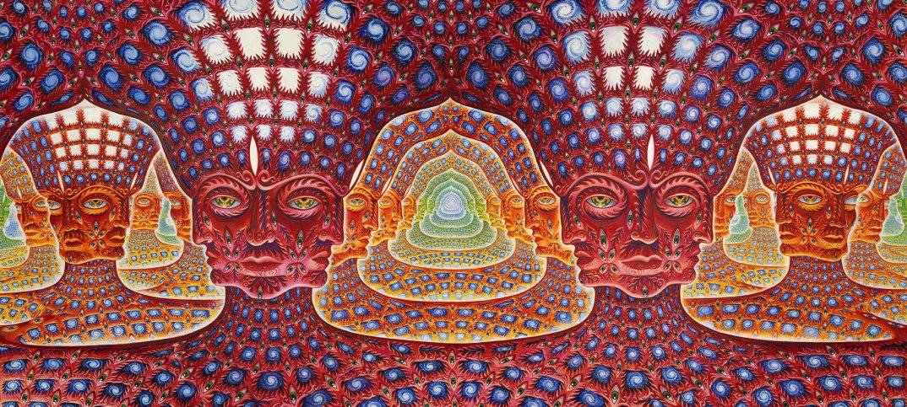
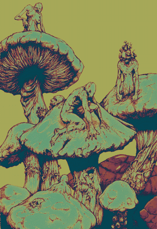
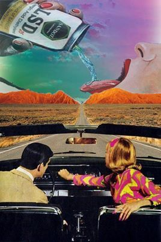
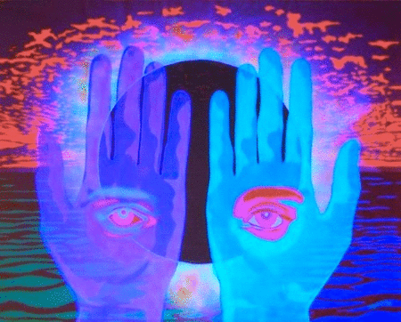

EL DMT

¿QUE ES EL DMT?
LA DIMETILTRIPTAMINA O DMT ES UN COMPUESTO PSICODÉLICO PODEROSO QUE SE ENCUENTRA EN LA NATURALEZA Y EN EL CUERPO HUMANO.
El DMT o dimetiltriptamina es un compuesto psicodélico de la familia de las triptaminas. Esto quiere decir que la estructura
del DMT es análoga a la de sustancias como la serotonina y la melatonina, mientras que sus funciones son semejantes a las
de otras triptaminas psicodélicas como la psilocibina. El N,N DMT actúa como enteógeno y esta capacidad de provocar estados
alterados de conciencia es la razón por la cual las tribus amazónicas lo han consumido ceremonialmente desde tiempos inmemoriables
, bajo la forma de ayahuasca e inhalado en forma de rapé con una leve variación molecular -5MeO-DMT, molécula que se consume también
sintéticamente y en las secreciones del sapo Bufo alvarius.

¿DONDE SE ENCUENTRA?
La presencia de DMT en varias especies de plantas y animales resulta sorprendente y se debe a que es un constituyente natural del
sistema nervioso central. Hoy en día los científicos intentan descubrir qué funciones tiene la dimetiltriptamina que se encuentra
endógenamente en el cuerpo humano, ya que los restos de esta sustancia en la orina y células cerebrales de las personas indican que
es elaborada naturalmente por nuestro organismo. Esta es la razón por la cual el investigador J. C. Callaway sugirió la posibilidad
de que el DMT esté relacionado con las "alucinaciones oníricas", es decir los sueños que tenemos mientras dormimos.

¿PARA QUE SE USA EL DMT?
El DMT es un alucinógeno de origen vegetal. Se ha utilizado durante mucho tiempo en diversos ritos religiosos en diferentes culturas ancestrales.
Al igual que otros alucinógenos, el fármaco opera sobre los receptores de la serotonina. Su uso produce rápidamente distorsiones visuales y sensoriales
extremas y imágenes aleatorias disociadas de la realidad. En los últimos años ha sido popularizado por unos cuantos escritores occidentales que lo han
promovido como creador de experiencias transformadoras "religiosas", lo cual es simplemente una extraña interpretación de los pensamientos disociados
generados por las interacciones químicas de la droga.
Al igual que el LSD antes, el DMT, promovido como la "molécula de Dios", no es más que un alucinógeno peligroso, de acción corta pero extremadamente intenso.
Y, al igual que el LSD, se puede esperar que tenga efectos significativos a largo plazo sobre el usuario, reduciendo su capacidad para hacer frente
a la realidad y puede, a veces, incluso generar episodios psicóticos.

¿COMO ES SU EFECTO?
Los efectos del DMT son poderosos y casi instantáneos. Puede llevar a quien lo toma de un estado de "normalidad" a un estado alterado de conciencia en
cuestión de segundos, lo cual para algunos puede resultar desorientador o atemorizante. La duración de un viaje de DMT es mucho más corta que la de
otros alucinógenos, durando entre 10 y 15 minutos, pero es sumamente intensa, Quienes han probado DMT con frecuencia reportan sensaciones de expansión
mental sumamente emocionales y visiones vívidas y elaboradas difíciles de poner en palabras, además de comunicaciones con otros seres o experiencias de
unidad cósmica, lo cual ha hecho a la dimetiltriptamina portadora del mote de "molécula espiritual".

ENCUESTA